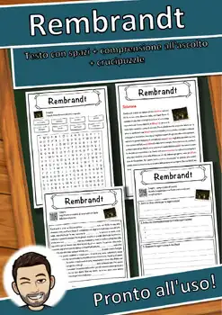
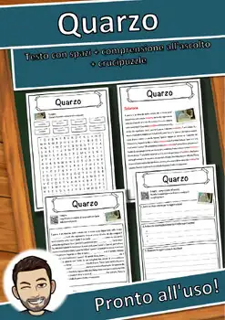
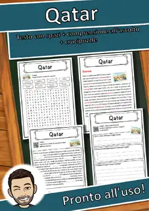
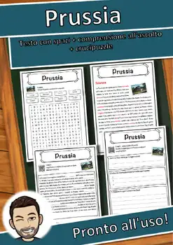
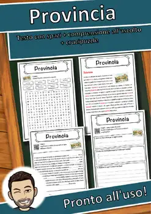
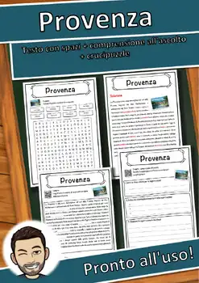
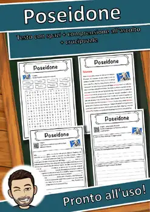
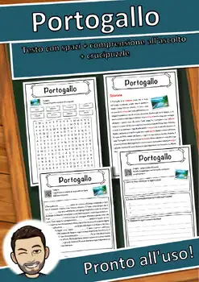

9th Grade Geography Worksheets
507 Geography resources for 9th Grade, ready to print: Stonehenge, Stoccolma, Sri Lanka, Spätzle and more. Each resource page shows the grade range, page count and a preview and links straight to the product on TpT.
507 resources

Stonehenge – Italian Reading Comprehension Worksheet (Scheda): Cloze & Listening

Stoccolma – Italian Reading Comprehension Worksheet (Scheda): Cloze & Listening

Sri Lanka – Italian Reading Comprehension Worksheet (Scheda): Cloze & Listening

Spätzle – Italian Reading Comprehension Worksheet (Scheda): Cloze & Listening

Sprea – Italian Reading Comprehension Worksheet (Scheda): Cloze & Listening

Spiaggia – Italian Reading Comprehension Worksheet (Scheda): Cloze & Listening

Sparta – Italian Reading Comprehension Worksheet (Scheda): Cloze & Listening

Spagna – Italian Reading Comprehension Worksheet (Scheda): Cloze & Listening

Somalia – Italian Reading Comprehension Worksheet (Scheda): Cloze & Listening

Soldato – Italian Reading Comprehension Worksheet (Scheda): Cloze & Listening

Sofia – Italian Reading Comprehension Worksheet (Scheda): Cloze & Listening

Slovenia – Italian Reading Comprehension Worksheet (Scheda): Cloze & Listening

Slesia – Italian Reading Comprehension Worksheet (Scheda): Cloze & Listening

Skyline – Italian Reading Comprehension Worksheet (Scheda): Cloze & Listening

Skopje – Italian Reading Comprehension Worksheet (Scheda): Cloze & Listening

Siria – Italian Reading Comprehension Worksheet (Scheda): Cloze & Listening

Sibirien – Italian Reading Comprehension Worksheet (Scheda): Cloze & Listening

Shanghai – Italian Reading Comprehension Worksheet (Scheda): Cloze & Listening

Seychellen – Italian Reading Comprehension Worksheet (Scheda): Cloze & Listening

Seul – Italian Reading Comprehension Worksheet (Scheda): Cloze & Listening

Serbia – Italian Reading Comprehension Worksheet (Scheda): Cloze & Listening

Senzatetto – Italian Reading Comprehension Worksheet (Scheda): Cloze & Listening

Senegal – Italian Reading Comprehension Worksheet (Scheda): Cloze & Listening

Scozia – Italian Reading Comprehension Worksheet (Scheda): Cloze & Listening

Sardegna – Italian Reading Comprehension Worksheet (Scheda): Cloze & Listening

San Marino – Italian Reading Comprehension Worksheet (Scheda): Cloze & Listening

Samoa – Italian Reading Comprehension Worksheet (Scheda): Cloze & Listening

Salisburgo – Italian Reading Comprehension Worksheet (Scheda): Cloze & Listening

Russia – Italian Reading Comprehension Worksheet (Scheda): Cloze & Listening

Rotterdam – Italian Reading Comprehension Worksheet (Scheda): Cloze & Listening

Roma – Italian Reading Comprehension Worksheet (Scheda): Cloze & Listening

Rom – Italian Reading Comprehension Worksheet (Scheda): Cloze & Listening

Rodano – Italian Reading Comprehension Worksheet (Scheda): Cloze & Listening

Riga – Italian Reading Comprehension Worksheet (Scheda): Cloze & Listening

Rifugiato – Italian Reading Comprehension Worksheet (Scheda): Cloze & Listening

Reykjavík – Italian Reading Comprehension Worksheet (Scheda): Cloze & Listening

Reno – Italian Reading Comprehension Worksheet (Scheda): Cloze & Listening

Rembrandt – Italian Reading Comprehension Worksheet (Scheda): Cloze & Listening

Quarzo – Italian Reading Comprehension Worksheet (Scheda): Cloze & Listening

Qatar – Italian Reading Comprehension Worksheet (Scheda): Cloze & Listening

Prussia – Italian Reading Comprehension Worksheet (Scheda): Cloze & Listening

Provincia – Italian Reading Comprehension Worksheet (Scheda): Cloze & Listening

Provenza – Italian Reading Comprehension Worksheet (Scheda): Cloze & Listening
Porto – Italian Reading Comprehension Worksheet (Scheda): Cloze & Listening
Praga – Italian Reading Comprehension Worksheet (Scheda): Cloze & Listening

Poseidone – Italian Reading Comprehension Worksheet (Scheda): Cloze & Listening

Portogallo – Italian Reading Comprehension Worksheet (Scheda): Cloze & Listening
Plancton – Italian Reading Comprehension Worksheet (Scheda): Cloze & Listening
No resources found – try a different search term or filter.